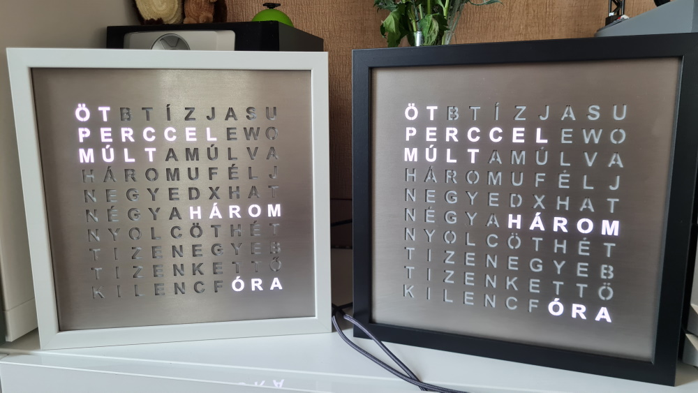
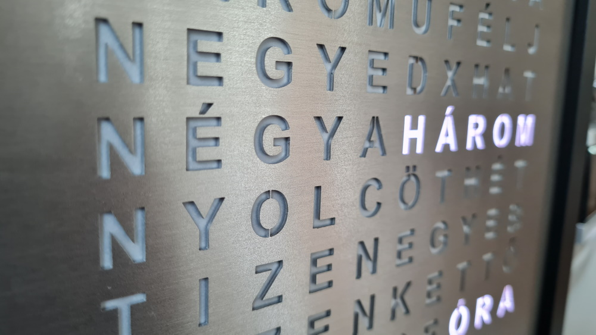
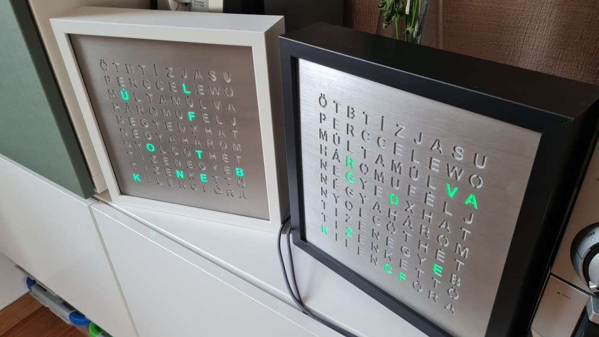
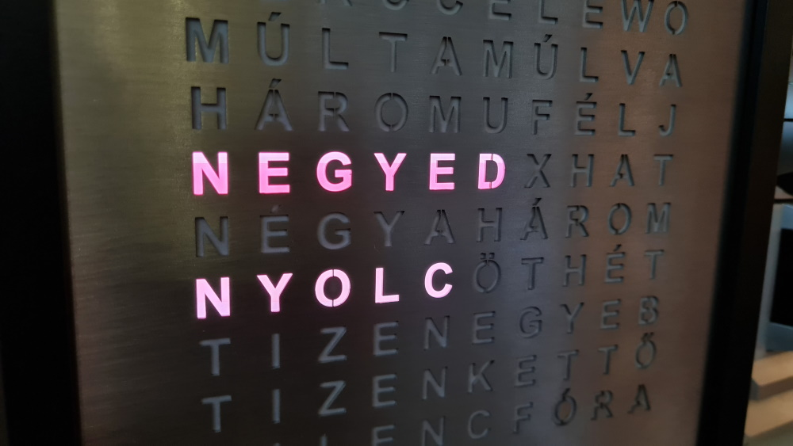
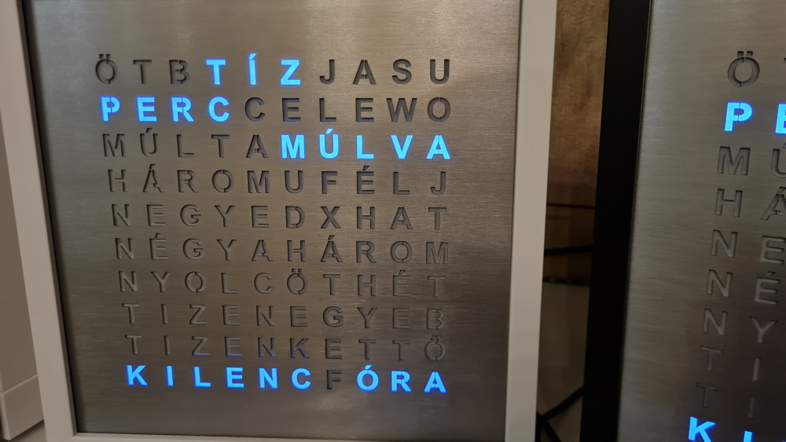

A szó óra egy olyan szerkezet ami egy 10x10 betűből álló óralapon az egyes betűk megvilágításával mondja el az időt. Ezen a felületen az időt 5 perc pontossággal tudja leírni, "öt perccel múlt x óra", "tíz perccel múlt x óra", "negyed x", stb formában. Az idő kiírása kis animációval történik.
Az óra előlapja szálcsiszolt rozsdamentes acél, matt lakkal lefújva. E mögött található pausz papír a homogén világítás érdekében és egy szines mátrix kijelző ami a megvilágítást biztosítja. A vezérlést egy wifis mikrokontroller végzi, ami csatlakozik az otthoni wifi hálózatra majd a pontos ídő egy idő szerverről lekéri. Így az órát nem kell és nem is lehet beállítani.
Mivel az időt csak 5 perc pontossággal mutatja hogy a kijelzett idő kicsit érdekesebb legyen, minden 5 percben egy kis animáció látható, ahol véletlen színnel véletlen betűk gyulladnak ki, majd 10 másodperc múlva visszatér az idő kijelzése.
Az idő megjelenítése követi a napszak színeit, nappal fehér színnel jelennek meg a betűk, amely naplementekor folyamatosan vöröses színbe megy át, majd az kék színbe estére. Reggel pedig a kék narancsba megy át napfelkeltekor és onnan vissza fehér. Az óra oldalán található fényérzékelő, így sötétedéskor a kijelző fényereje is csökken. Teljes sötétségben is viszonylag világos, egy hálószobában zavaró lehet.
Az óra egy 25x25 centiméteres IKEA képkeretben kapott helyett, ami fehér vagy fekete színű lehet. Működésehez szükséges áramot egy USB kábelen kapja, illetve egy USB töltőről. De a USB töltő helyettesíthető bármilyen hagyományos, 1.5A-t leadni képes töltővel.
Amennyiben valakinek fontos, jelzem előre hogy alulról a harmadik sorban a "TIZENEGY" szóból az első három betűt használom a tíz óra kijelzésekor. Így ez a szó rövid i betűvel jelenik meg.
